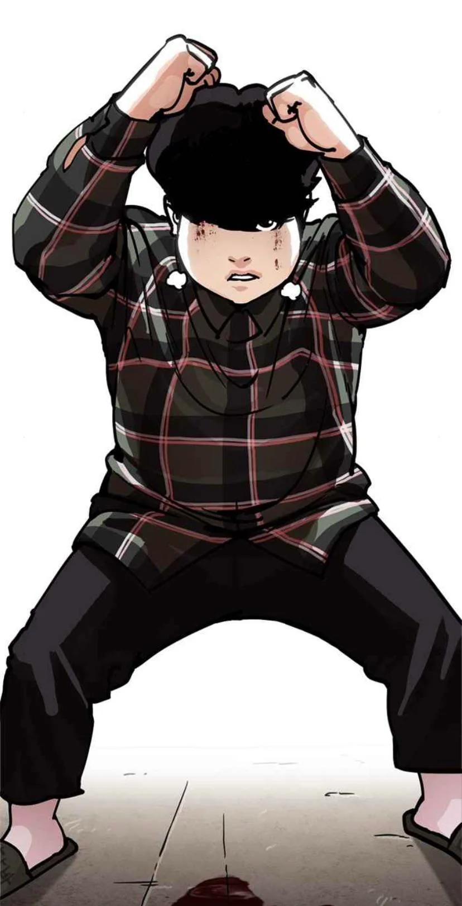
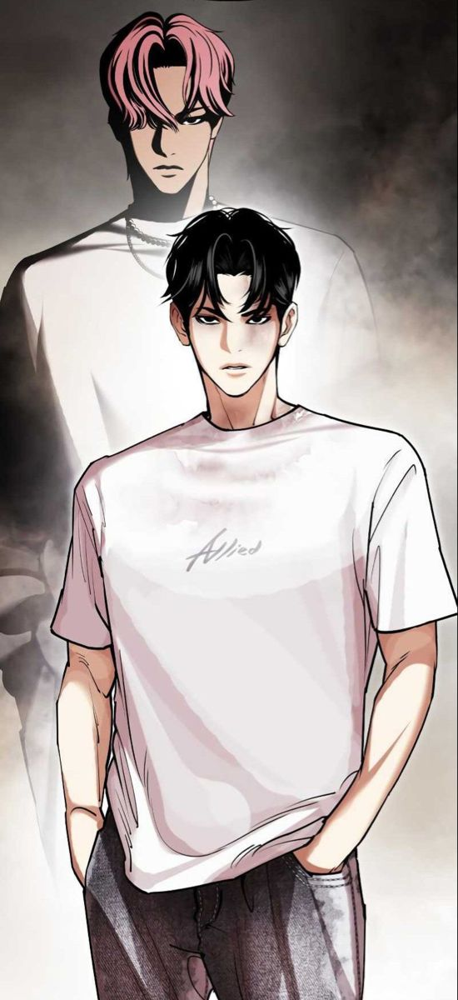

About LOOKISM
Daniel Park First Body ------------------- ------------------- -------------------
Daniel Park (Park Hyung-Seok) adalah protagonis utama dari Lookism. Dia adalah seorang siswa di Jurusan Mode SMA J. Sebagai mantan korban "Lookism", dia dihakimi dan diejek karena penampilannya yang tidak biasa sampai suatu hari yang menentukan dia menemukan dirinya berada dalam tubuh Alternatif yang sempurna. Dia mendapati dirinya mampu memindahkan kesadarannya di antara dua tubuh sesuka hati, dan dengan demikian memulai kisah Lookism. Saat ini, dia adalah kepala kru Allied, dengan tujuan untuk menghancurkan para Pekerja, yang terakhir dari Empat Kru Utama yang masih bertahan.
Daniel dapat berubah menjadi tubuh keduanya ketika yang asli tertidur. Tubuh yang tidur akan mengalami semua fenomena fisiologis normal dan harus dirawat seperti tubuh yang sebenarnya. Setiap saat, kesadaran Daniel tetap aktif, yang berarti dia tidak bisa bermimpi.
Tubuh alternatif Daniel Park secara dangkal lebih unggul secara fisik jauh lebih bugar dari tubuh aslinya, lebih tinggi, dan lebih tampan.Sejak dia menjadi lebih menarik dari segi penampilan, pengalaman SMA Daniel menjadi sepuluh kali lebih menyenangkan. Dulu dia sering di-bully di sekolah, sekarang dia diperlakukan seperti bintang, bahkan ada yang meminta untuk berfoto dengannya, atau meminta tanda tangannya.
Daniel menjadi pusat perhatian bagi pria dan wanita, mendapatkan rasa hormat dan pemujaan hanya karena tampan secara konvensional.Selain penampilan, dan yang lebih penting, Tubuh alternatif Daniel memberinya rasa percaya diri yang tidak dimilikinya saat dalam bentuk aslinya.
Setelah menghadapi prasangka dan intimidasi yang tidak manusiawi, ketika dalam bentuk alternatifnya, Daniel menjadi lebih percaya diri, lebih dominan dan tegas.Karena dia lebih nyaman di tubuh ini, keterampilan bawaan Daniel, yang merupakan naluri dan kekuatan bertarungnya, juga menjadi lebih kuat di tubuh alternatif.
Meskipun dia tidak lebih tangguh di tubuh alternatif, hampir semua kedatangan Daniel menghilang ketika dia mengalihkan kesadarannya ke tubuh yang lebih tampan.Daniel dikenal sebagai petarung terlahir, mampu meniru dan menghafal teknik bertarung apa pun dan mengeksekusinya dengan hampir sempurna saat bertarung.
Meskipun dia tidak memiliki pelatihan sebelumnya, dia bisa bertarung dengan kompeten seperti seorang ahli. Masalahnya adalah dalam tubuh aslinya, dia merasa sangat lemah dan tidak mampu, sehingga dia tidak dapat menggunakan keahliannya secara efisien.Inilah sebabnya mengapa, di tubuh keduanya, Daniel bisa bertarung dengan lebih lincah, kuat, dan tahan lama.
Dia menjadi salah satu yang terkuat di seri ini, lebih kuat daripada anggota geng yang telah berlatih sepanjang hidup mereka. Dia mampu mengalahkan Jong Gun yang legendaris sekali, suatu prestasi yang hanya pernah dicapai Euntae sebelumnya.Daniel lebih nyaman di kulit ini, dan dengan demikian tampil lebih baik secara mental, fisik, dan emosional di tubuh alternatifnya.
------------------- ------------------ ----------------- Daniel Park Second Body

Keterbatasan terbesar dari tubuh alternatif Daniel adalah bahwa dia log out ketika dia tertidur. Begitu dia kehilangan kesadaran, dia bangun di tubuh aslinya.Daniel menghabiskan hari-harinya di tubuh alternatifnya yang lebih tampan, bersekolah, bersosialisasi, dan bahagia. Namun di malam hari, ia harus beralih ke kenyataan, menghadapi diskriminasi dunia yang kejam.
Kerugian terbesar Daniel juga digambarkan sebagai belas kasihnya, yang membuat para petarung dengan mudah menguasainya. Karena bertahun-tahun menghadapi beban negatif, tekadnya juga tidak terlalu bagus, dalam bentuk apa pun dia berada.Dia juga takut mencoba hal baru dan mengeksplorasi dirinya sendiri, yang menghalangi pertumbuhan dan perkembangannya.
Namun, terungkap bahwa Daniel telah berlatih keras di bawah Euntae/Vasco, sedemikian rupa sehingga tubuh aslinya hampir menyerupai yang pertama.Selama Kebenaran Dibalik Daniel Park busur, Daniel berpikir bahwa tubuh alternatifnya adalah seseorang bernama James Lee dan mungkin dia memiliki keluarga sendiri.
Tapi James Lee sebenarnya adalah nama yang digunakan Diego Kang atau DG, sebelum dia membuang identitas itu. DG adalah bintang K-Pop terkenal dan kepala PTJ Entertainment, legenda 1st Generasi.Charles Choi alias Elite, CEO Grup HNH dan ayah dari Crystal Choi, satu-satunya karakter lain dengan dua tubuh, memberi tahu Daniel bahwa jika dia bisa mengalahkan DG, dia akan memberitahunya tentang rahasia tubuhnya.